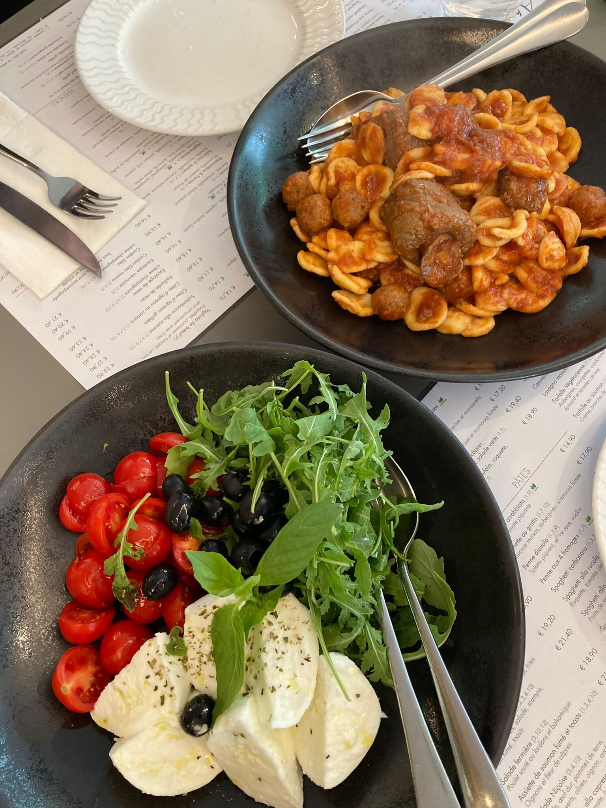
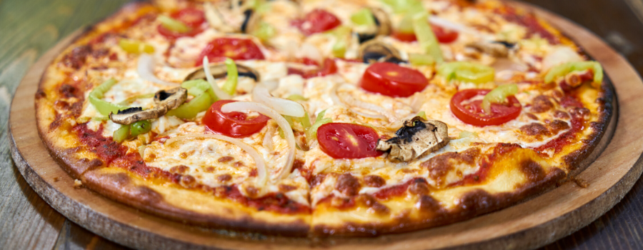
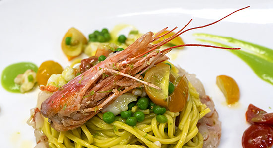
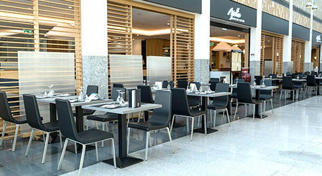

Le pain plat farci des Pouilles — chaud, généreux, à composer. Une vraie signature régionale, rare à Luxembourg. Choisissez votre garniture.
À déguster sur placeSuggestions du midi pour les bureaux du plateau. Rotation hebdomadaire — exemples, à confirmer.
Ticket Restaurant · Chèque Repas« Antichi sapori » — les saveurs d'autrefois. Apulia porte les Pouilles à Luxembourg : orecchiette roulées à la main, pizza napolitaine, mozzarella di bufala et cette générosité méridionale où l'on partage sans compter.
En cuisine, le chef Vito Colapietro apporte sa touche personnelle à chaque assiette. (chef à confirmer)
